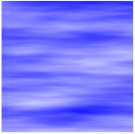
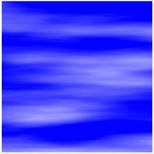
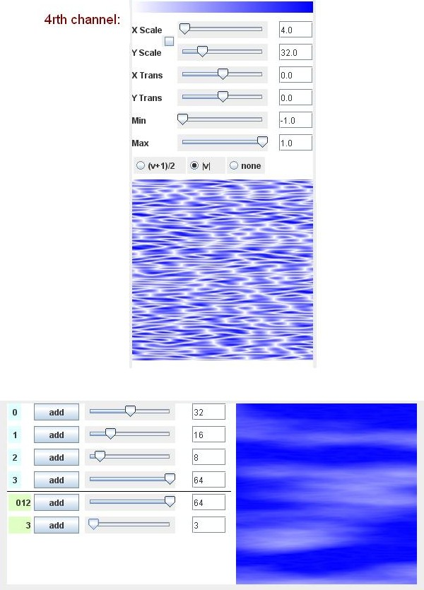

The technique employed here sums together the return values of multiple calls to the noise function, using a fractal sequence. Each call to the noise function is scaled by a value that has twice the scaling factor of the preceding call. These scaling values are termed "octaves". The return values are added together according to a weighting formula that gives each octave half the weight of the preceding octave.
The following code will create a BufferedImage that
matches the above graphic. A template has been provided (see the
"Code Template" button) where you can copy and paste this code and
run it as a stand-alone Java program. Code lines that are different
from previous examples are bolded.
BufferedImage image = new BufferedImage(width, height,
BufferedImage.TYPE_INT_ARGB);
WritableRaster raster = image.getRaster();
int[] pixel = new int[4];
// the blue value is always at maximum
pixel[2] = 255; // blue
pixel[3] = 255; // opaque
int[] octaveScale = {2, 4, 8, 16};
int[] octaveAmplitude = {8, 4, 2, 1};
int octaves = octaveScale.length;
float amplitudeSum = 0;
for (int i : octaveAmplitude)
{
amplitudeSum += i;
}
double noiseSum = 0;
for (int y = 0; y < height; y++)
{
for (int x = 0; x < width; x++)
{
noiseSum = 0;
for (int i = 0; i < octaves; i++)
{
noiseSum += SimplexNoise.noise(
x * octaveScale[i]/256f,
y * octaveScale[i]/256f )
* ( octaveAmplitude[i]/amplitudeSum );
}
noiseSum = (1 + noiseSum) / 2;
noiseSum *= 256;
pixel[0] = (int)noiseSum;
pixel[1] = pixel[0];
raster.setPixel(x, y, pixel);
}
}
This code illustrates an implementation of the concept "Sum 1/f
Noise" presented by Ken Perlin in his "Making Noise" lecture from
1999. [http://www.noisemachine.com/talk1/index.html]
Perlin gives a fractal sequence:
noise(p) + (1/2)*noise(2p) + (1/4)*noise(4p) ...
and suggests that the sequence need go no more than to the point where the results would be too small to see.
Many of the blogs I've seen refer to each of these elements as an "octave," borrowing conceptually from the physics of music. The analogy may be apt, but also has implications that might lead us to overlook possibilities if followed too rigidly. I will write on this topic some more, below.
In the code example, the fractal sequence is loaded into an array
of scaling values (octaveScale) and of weights
(octaveAmplitude). The values in these arrays are
accessed in the innermost loop and the result is summed into
noiseSum.
In order to make the sequence of noise calls sum up to a maximum
of 100% while obeying the "halving influence" formula, we take the
sum of all the amplitude weights in the octaveAmplitude
array and use that as a denominator when calculating the relative
weight contribution from each octave. The sum of our fractal
sequence is 15 (equal to 1 + 2 + 4 + 8). So, our returned noise
values are weighted as follows: 8/15, 4/15, 2/15, 1/15. When
combined, the four values will result in a single value that will
lie within the output range of -1 to 1.
For clouds effects, the smooth noise quality is usually
preferred, so the "(v + 1)/2" transform is applied to normalize the
data. Then, we multiply the resulting value by 256 and apply an
int cast to bring the value down to a maximum of 255.
Blue is always 255 in this graphic. When Red and Green are 0, the resulting color is Blue, and when Red and Green are 255, the resulting color is White. The noise values are used to modulate the Red and Green channels.
If desired, one can add more (or have less) octaves by adding or taking away members of the two octave arrays. The graphic at the top of the page uses five octaves. I've also run the above code with six and seven octaves. For the seven-octave case, one can fill the two arrays with the following data:
int[] octaveScale = {2, 4, 8, 16, 32, 64, 128};
int[] octaveAmplitude = {64, 32, 16, 8, 4, 2, 1};
On my setup at home, I have a great deal of trouble distinguishing between the five- and six-octave cases, let alone the seventh. But I haven't determined, conclusively, what the limiting factor is. Perlin mentions the width of a pixel, but we could also be dealing with the relative amplitude of the last factor being swamped.
Another consideration that occurs to me is that there is probably a "Nyquist" upper limit to the effectiveness of the algorithm. If the noise has a given frequency (due to the regular spacing of the gradient grid) and a scaling factor that exceeds half this frequency, the results could devolve into a more chaotic noise or some Moire-type pattern or aliasing (in the audio sense).
But I will leave the question of what the upper scaling limit might be to someone with the math skills to calculate a theoretical limit.
Using the Texture Editing tool
The first thing I'd like to point out is that there is nothing "magical" about the X & Y values all starting at (0, 0) as far as the "Sum 1/f noise" algorithm is concerned. If you translate any of the channels, the specific result will vary, but it will always have the same degree of randomness. You can test this by manipulating the "Translation" sliders on the tool.
The second thing I'd like to point out is that the scaling need not be exactly in harmonic ratios. Acceptable clouds can be obtained with different scale settings, whereas in music physics, deviations from exact harmonic ratios can lead to considerable discord. The third thing to point out is that the relative weights need not be exact ratios either. One can experiment with this by fiddling with the stage 1 section of sliders, which determine the relative weights of the various channels.
Thus, the "octaves" metaphor shouldn't be taken too literally. [I blame my Music Theory background for this "oversensitivity" to the use of the term "octaves".] However, there are still good justifications for this concept. The construct allows for a very compact way of coding calls to the noise function (using the iterator to generate successive powers of two), and there is much in nature that is fractal in structure.
A Cirrus clouds texture
Clouds come in many shapes and sizes. I'd like to spend a little time now demonstrating how one can edit the basic Fluffy Clouds settings and obtain some delicately textured cirrus clouds.
Cirrus clouds tend to be long and flat, so one step is to change the scaling. I like the ratio of 1 to 8 for this effect, and set up four channels scaling factors as follows: (1) x = 0.5, y = 4; (2) x = 1, y = 8; (3) x = 2, y = 16; (4) x = 2, y = 32. This gives us the following graphic:
Fig. 1a, Cirrus clouds from Classic clouds, stretching the horizontal to vertical scaling to a 1:8 ratio.
This looks quite nice, but I think I want to have less clouds, and more blue sky. To accomplish this, I am going to take advantage of the clamping function, and mix in some non-normalized signal. Since half the non-normalized signal falls below zero, there should be areas where the sum will also fall below zero. Given the clamping, these areas will become the first color value in our color mapping function, which in this case is blue.
Thus, on channel 0 (the leftmost), select the "none" option from the radio buttons between the sliders and the channel graphic. In coding this, you would have to change your program to segregate the first channel's return value from the rest of the channels and wait until after they have been summed and normalized via the smooth function before adding them in.
Fig. 1b, Cirrus clouds from Classic clouds, adding blue sky by lowering the sums and clamping.
Now, I'd like to introduce a bit of the thread-like quality to these clouds. To do so, I'm going to use the highest channel to inject some turbulent noise. Simply clicking the "|v|" radio button on the 4th channel (channel "3") will add an interesting level of detail, but notice how the fold in the noise texture is centered on blue. I'd like to have these fold lines be white instead. This can be done by flipping the color mapping.
To flip the colors, I'd like to introduce the color bar editing tool:
(1) Locate the Color Bar editing tool in the bottom right corner and select the "Copy" radio button.
(2) Click on the blue-to-white color gradient.
(3) Click on the "Paste" button, then click on the second row of the Color Bar editing tool. This should paste a copy of the blue-to-white color bar to the second row of the editing tool.
(4) Click the "Edit" radio button, then click the second color bar (our new blue-to-white copy). This will bring up an editing popup.
(5) Hit the "reverse" button. This will give us a white-to-blue gradient. Then hit the close "X" in the top right corner.
(6) At the top of the fourth color channel, click in the blue-to-white color bar. This will bring up a selection of color bars that include the white-to-blue bar which we just created. You should be able to see the fold-lines are now the color white.
However, we are not done yet! The flipping of the color mapping means we will no longer be summing our four channels together. Channels 1, 2, and 3 will continue to use the blue-to-white color mapping. Channel 4's noise value will be applied to the white-to-blue mapping. Thus, we will have to merge these two in the 2nd stage of the mixer.
And indeed, the mixer has segregated channel 3 into a separate track for us. What I suggest is the following: make the input signal to the 2nd stage as strong as possible by setting channel 3's first slider to 64. Then, nudge up 2nd stage slider for channel three to a point where the blended texture pleases you. I happen to like a volume of "3" at this point.
The visual effect can be seen in the following figure. I've included the channel 3 settings and mixer settings in the figure. I like these clouds a lot, but perhaps you might wish to tweak it in another direction. As you can probably tell, the scope for tweaking and experimentation is considerable.
Fig. 1c, Cirrus clouds from Classic clouds, with added turbulent noise at a high octave. Also shown are channel and mixer settings.
Every transform has a procedural step behind it. Coding a heterodox texture like this does involve more bookkeeping than sticking with a purely fractal and consistent setup. But it does allow for the creation of unique and expressive textures.